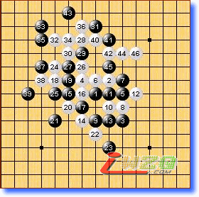
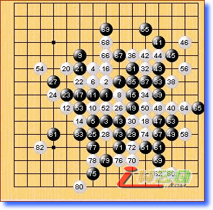
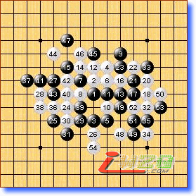
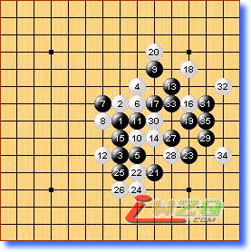
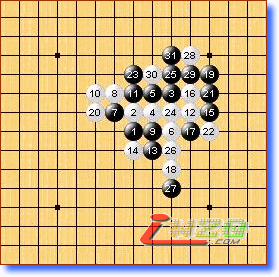
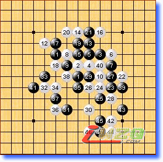

第十届世锦赛A组第八轮略评
#1 第十届世锦赛A组第八轮略评 作者：有志青年 发表时间：2007-8-13 23:31:32
第一局 黑方 吴镝 白方 Kozhin 白胜
本局吴镝速胜，气势如虹！虽然kozhin是打算阻击下吴镝的连胜势头，但23一步低级失误让白方简明速胜。吴镝胜了此盘夺冠有望！

第二局 黑方 Karlsson 白方 Taimla 黑胜
老将卡尔松扮演巨人杀手，继上轮扳倒山口后，本局又将Taimla拉下马来。瑞星大型定式，从执黑方的角度来分析，或许只是想保住半分即可。最后关头白72如防4h的话应该和棋，此局负后Taimla夺冠前景黯淡。

第三局 黑方 Sushkov 白方 Yamaguchi 白胜
为Sushkov惋惜，错过两次取胜机会。并且，最后的53如果防5i的话还能硬撑。幸运的山口。

第四局 黑方 Savrasova 白方 lio 黑胜
记得中村最先在日本名人赛中走出这个14，此后流行一时。各国棋手对此研究深入，白棋并不好下。实战20是必败，黑方给出正解。或许QT的比赛让lio大伤元气吧。

第五局 黑方 chingin 白方 Okabe 黑胜
本局至黑15与“44期日本名人”长谷川VS河村一局一样（参见44期日本名人战对局点评），不同的是白16变招。其实，这手棋已经被证明是必败的。黑17必胜的要点！chingin完胜的一局。

第六局 黑方 purk 白方oll 黑胜
对局的双方是爱沙尼亚棋手。
